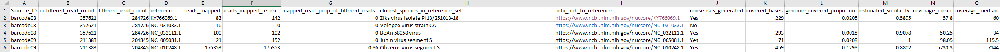

Parameters
Reference guide for the pipeline configuration options and runtime flags.
Open parameters guideReference material for parameters, output metadata, examples, and pipeline usage.
Reference guide for the pipeline configuration options and runtime flags.
Open parameters guideDescriptions of all columns that appear in the sample metadata CSV outputs.
Open metadata columnsOverview of the pipeline, installation, and usage instructions.
Open project READMEInteractive example of a per-reference coverage plot generated by the pipeline.
Open coverage plot
This page is designed to be hosted directly from the docs folder in GitHub Pages.